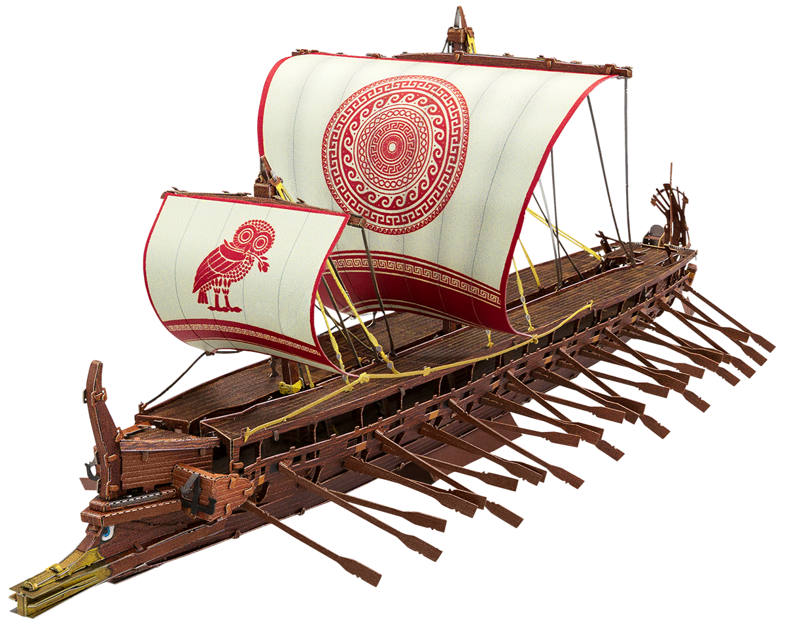

← All projects
Robotics · UT Austin
Greek Trireme.
A four-bar slider-crank mechanism that converts continuous rotation into linear reciprocating motion.

Mechanical design · Four-bar slider-crank · Rotary-to-linear motion
The mechanism
The system uses a dual slider crank to convert continuous rotation into linear reciprocating motion. Combined with a lever bar, we are able to turn a simple circular rotation into a 3D rowing motion.